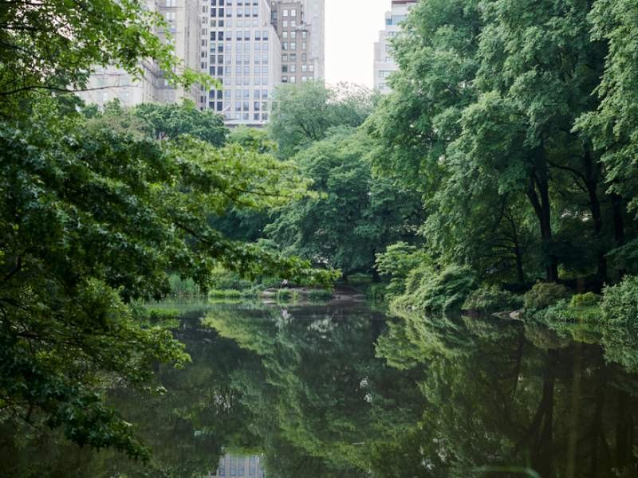

Breakfast + pack
Check out or arrange bag storage. Preconfirm the airport pickup location and allow time to collect bags.
DAY 05 · SATURDAY · NOVEMBER 28
A small animal adventure, then a sensible afternoon flight home.
← Back to the five-day plan
A REALISTIC RHYTHM
Check out or arrange bag storage. Preconfirm the airport pickup location and allow time to collect bags.
Choose a compact animal visit; do not try to do every exhibit. Winter hours begin Nov 1. Tickets and child age rules should be checked at booking.
Eat near the hotel, collect bags and do a final room check: charger, favorite toy, stroller parts.
Allow 60–90 minutes driving, targeting arrival at least two hours before departure. Leave earlier if traffic or airline guidance warrants.
Nonstop Airbus A321. Keep a fresh snack and diaper kit for the flight. The schedule remains subject to airline changes.
$130 family allowance: breakfast $30, early lunch $50, airport snacks/dinner $50. Carry food before boarding rather than relying on flight service.
Zoo is stroller-friendly but outdoors; take a carrier for indoor exhibits. If Rue needs a slow morning, swap the zoo for a 30-minute park walk, then an early lunch. Plan a nap on the flight or in the transfer.
Hotel → zoo ~15–25 minutes walking from northern Midtown. Back to hotel then LGA; no rental car needed. American’s 3:31 p.m. return requires pickup about 30 minutes earlier.
Wet/cold: indoor breakfast and a brief Shops at Columbus Circle wander. Do not add a faraway attraction on departure day.
Reconfirm the transfer the night before. With American’s cheaper early-morning return, remove this entire sightseeing morning.
Day marker shows the main neighborhood, not a turn-by-turn walking route.
Central Park Zoo · hours and rates ↗ · Google Flights · ATL–LGA · Nov 24–28 · two adults ↗ · MTA · LaGuardia connections ↗